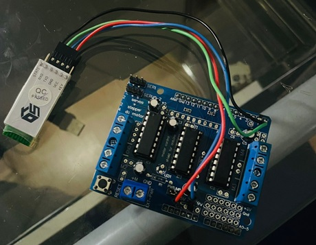
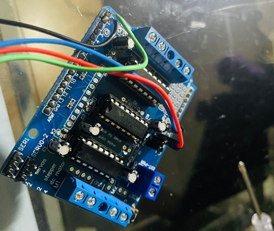
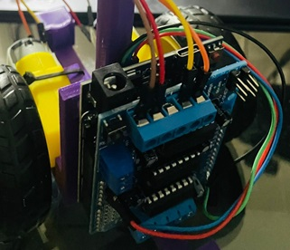
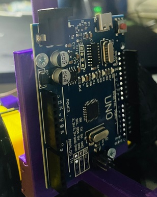

Embora a construção de um robô BB-8 de controle remoto seja um projeto emocionante e divertido,
existem alguns problemas que os construtores podem enfrentar.
Nesta página poderão ver quais os problemas que vão aparecer ao longo do caminho.
Seleção de Componentes
A seleção dos componentes certos é fundamental para garantir que o carro funcione corretamente.
A escolha de componentes de baixa qualidade pode resultar em um robô que não funcione ou não responda corretamente.

Soldagem
A soldagem é um processo importante na construção do robô, e é essencial garantir que as conexões elétricas sejam seguras e confiáveis.
A falta de habilidade na soldagem pode levar a conexões fracas, o que pode resultar em um mau funcionamento do robô.

Configuração e Calibração
Após a montagem do robô, é necessário configurá-lo e calibrá-lo adequadamente para garantir que ele funcione corretamente.
Isso pode ser um desafio para aqueles que não têm experiência em trabalhar com componentes eletrônicos ou na programação de controladores.

Problemas Mecânicos
Os robôs de controle remoto são suscetíveis a problemas mecânicos, como peças partidas ou desgastadas.
É importante ter em mente que a manutenção do robô pode ser necessária para garantir seu bom funcionamento.

Personalização
Embora a personalização possa ser uma parte divertida e criativa do projeto,
pode ser um desafio encontrar as peças certas para atender às suas necessidades.
A escolha de peças incompatíveis ou inadequadas pode resultar em um robô que não funcione corretamente.